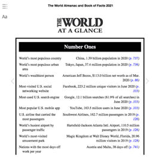
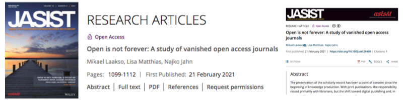
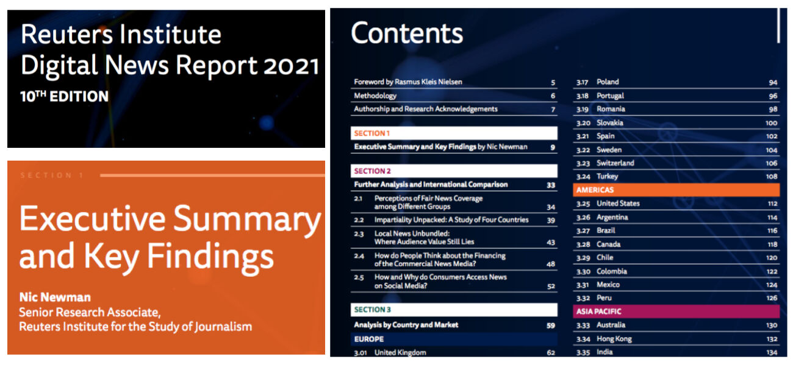

Trainees Edition
Trainers Edition
Trainees Edition
Trainers Edition
MODUL 13: VIRI ZANESLJIVIH INFORMACIJ
Opis modula
Glavni namen tega modula je udeležencem predstaviti vire zanesljivih informacij, da bi jim pomagali prepoznati in razlikovati med različnimi kategorijami in vrstami virov informacij. Sekundarni cilj je usmerjanje izvajalcev usposabljanja, ki vsebino tega modula uporabljajo pri izobraževanju svojih udeležencev.
V skladu s temi cilji so v tem modulu zajete opredelitve glavnih kategorij in vrst virov informacij, primeri virov informacij o novicah in novinarstvu ter smernice za poučevanje tega predmeta.
Udeleženci, ki bodo uspešno zaključili ta modul, bodo znali:
- prepoznati in razlikovati različne kategorije informacijskih virov (npr. primarni, sekundarni ali terciarni viri);
- prepoznati in razlikovati različne vrste informacijskih virov (npr. referenčni viri, knjige, serijske publikacije, podatkovne zbirke);
- poznajo nekaj primerov informacijskih virov, povezanih z novicami in novinarstvom.
Additionally, trainers who successfully complete this module, will be able to demonstrate an understanding of the guidelines for teaching the subject.
Poleg tega bodo predavatelji, ki bodo uspešno zaključili ta modul, lahko pokazali razumevanje smernic za poučevanje tega predmeta.
Struktura modula
Ta modul je sestavljen iz naslednjih delov:
- Opis modula (objectives, description of the content, and learning outcomes)
- Struktura modula
- Smernice za udeležence usposabljanja
- Guidelines for Trainers (preparation, methods, and tips)
- Smernice za izvajalce usposabljanja (kako se pripraviti, metode za uporabo in nasveti za izvajalce usposabljanja)
- Vsebina (študijsko gradivo in vaje)
- Kviz
- Viri (reference in priporočeni viri ter videoposnetki)
Glavni cilji modula, opis vsebine in učni rezultati so pojasnjeni v delu Opis modula. Smernice za udeležence usposabljanja vključujejo navodila in predloge za udeležence izobraževanja. Smernice za izvajalce usposabljanja vodijo izvajalce usposabljanja skozi različne faze usposabljanja in vsebujejo nasvete, ki bi lahko bili koristni pri poučevanju predmeta. Vsebina vključuje vsa študijska gradiva in vaje, povezane z vsebino. Kviz vključuje vprašanja z več možnostmi izbire in/ali resnična/nepravilna vprašanja, s katerimi lahko udeleženci usposabljanja preverijo svoj napredek. Viri vsebujejo dve komponenti: reference in priporočene vire za nadaljnje branje in študij. Reference so seznam virov, navedenih v vsebinskem delu. Priporočeni viri so sestavljeni iz seznama dodatnih virov in videoposnetkov, ki jih priporočamo za branje in gledanje, da bi se naučili več o temi.
Smernice za udeležence usposabljanja
Od udeležencev izobraževanja se pričakuje, da bodo prebrali besedilo, si ogledali priporočene videoposnetke in izvedli vaje. Za dodatne informacije lahko poiščejo predlagane vire. Po končanem študiju vsebine učencem priporočamo, da opravijo kviz za oceno svojega napredka.
Guidelines for Trainers
Guidelines for Trainers includes suggestions and tips for trainers on how to use the content of this module to train learners about sources for reliable information. Trainers can revise the study material if needed.
Preparation
Preparing a presentation (PowerPoint/Prezi/Canva) which is supported by visual materials is strongly suggested. It is also suggested that examples of sources (e.g. Data Turkey, LETA, LURSOFT "Laikrakstu bibliotēka"), and exercises be adapted to issues which are more familiar to the target group. It also helps to maintain the attention of learners. During the course, a real time use of different sources is also strongly suggested.
Getting Started
A short Kviz (3 to 5 questions) in Kahoot or Mentimeter can be used at the beginning for engaging participants in the topic. The Kviz can also be used as a motivational tool, as well as a tool to check trainees’ existing knowledge on the subject. Some examples for questions might be:
- What does primary source mean?
- Can you give an example of a reference source?
- What is a database?
- Is it possible to access the world's major news content gathered from mainstream sources via a single source?
Methods to Use
Various teaching methods can be used in combination with each other during the training. Methods such as:
- Lecturing
- Group work
- Individual work
- Self-reflection
Tips for Trainers
Warming-up
An effective way of involving participants and their learning expectations is to ask a few preliminary questions on the subject (sources for reliable information). For instance, learners might be asked: What is a secondary source? Where can I find historical newspapers? What is the difference between web sources and databases? Also an activity can be conducted as follows:
- prepare different search topics requiring the use of different kinds of sources (e.g. reference sources, databases, books, serials, standards)
- ask participants to choose appropriate and reliable sources for these topics
- ask participants to share and explain their choices with other participants
- ask participants to use the sources chosen by themselves, in order to answer the research questions
- ask participants if they are satisfied with the results
- ask participants if they think these results are reliable
After the activity, make sure that participants are able to understand that there are many different kinds of sources, that different types of sources address different kinds of information, and that not all sources are reliable.
Presenting the Objective of the Lesson
The objective of the lesson (which is to introduce categories and types of sources for reliable information) should be made clear. Following the warm-up questions, it will be easier to clarify the objectives.
Presenting the Lesson Content
While presenting the content, make sure to interact with the learners, and encourage them to participate actively.
Before
- Before the lesson prepare questions for participants to practice, using different sources (determine questions and most appropriate sources)
- Before the lesson decide which sources will be used for practice
During
- At the beginning of the lesson ask participants:
- What is reliable information?
- Why are reliable information sources important?
- What do they know about categories and types of information sources?
- What could be the consequences of not using reliable sources?
- What are the most appropriate and reliable sources to use in order to answer the practice questions?
- While introducing categories and types of information sources:
- Ask participants to give examples of the information needs that we can apply to these sources.
- Make comments on their examples.
Afterwards
- Review and elaborate on the importance of using reliable sources for the acquisition and evaluation of information.
- Make sure participants understand that a variety of sources for reliable information exist, all of which require evaluation.
- Provide new search topics for participants to explore using the sources explained in this module.
Suggestions
- Be sure to support your lessons with practical examples and exercises.
- While providing examples of sources, choose country- or learner-specific sources.
- When you choose examples, make sure that they fit well with the definition of the category and types of sources. Determining if a source is primary, secondary or tertiary might be tricky.
Conclusion
Give a short summary of the lesson, and ask questions which would help underline the most important content and practises that you would like to emphasise. Such as:
- Why is knowing the different kinds of sources important?
- What might happen if we do not apply “reliable” sources?
- Were the participants able to find answers to each of the search topics on the internet?
In the “post-truth world” , being aware of different sources for reliable information will enable participants to satisfy information needs thoroughly and efficiently and protect them from being deceived by false information.
Vsebina: Viri zanesljivih informacij
Uvod
Danes sta zaradi razvoja informacijskih in komunikacijskih tehnologij hitro naraščajoča količina informacij in raznolikost virov postala ena največjih težav pri dostopu do točnih in zanesljivih informacij. V današnjem informacijskem ekosistemu je zelo pomembno, da so tisti, ki ustvarjajo ali prispevajo k pripravi vsebin (kot so avtor, urednik, sodelavec, založnik), avtoritete na tej temi ali področju ter da so predstavljene informacije in dokumenti pravilni, objektivni in popolni, z drugimi besedami: zanesljivi. Informacije se ustvarjajo in objavljajo predvsem v elektronskih medijih. Vsakdo lahko zelo enostavno in hitro ustvarja in deli vsebine, dostop do teh vsebin pa je prek omrežij zelo enostaven. Zato je dostop do zanesljivih virov najpomembnejši. Ker se z večanjem vsebine in števila virov povečujeta tudi vsebina in število virov, je izbira in vrednotenje ustreznih in pravilnih informacij vse bolj zapletena in težja. Rezultat obstoječega informacijskega ekosistema so tudi različni pojmi, ki vstopajo v naša življenja, kot so lažne informacije, dezinformacije, napačne informacije, lažne novice in informacijsko onesnaženje. Zelo pomembno je, da so tisti, ki ustvarjajo vsebine ali prispevajo k njihovi pripravi, avtoritete na tem področju ali predmetu ter da so predstavljene informacije in dokumenti pravilni, objektivni in popolni, torej zanesljivi. Danes ne bi bilo napačno reči, da je človekovo vedenje pri iskanju informacij na splošno v obliki iskanja po spletu. V teh okoljih (omrežjih) ni lahko najti "zanesljive informacije" ali izbrati zanesljive informacije med dostopnimi informacijami ali viri informacij. Informacijski viri, ki jih posameznik izbere/uporabi, so zelo pomembni za učinkovito in uspešno zadovoljevanje informacijskih potreb, saj sta veljavnost in zanesljivost dostopnih informacij odvisni od vira. Hkrati se vir, po katerem se posvetujemo, spreminja glede na potrebne informacije. Na primer, bolj uporabni bodo splošni viri informacij; če pa potrebujemo podrobnejše ali specializirane informacije, so lahko bolj uporabni tematsko specifični viri. Zato je zelo pomembno, da razumemo različne vrste virov. Informacijske vire lahko razvrščamo na različne načine, in sicer glede na njihove lastnosti dostopa (primarni ali sekundarni), vsebino (znanstveni ali popularni), medij (tiskani ali netiskani), obliko objave (periodični ali neperiodični), proizvajalca (vladne publikacije, publikacije podjetij, strokovne publikacije ali sive publikacije), čas (aktualni ali zgodovinski) itd. V tem poglavju bodo razložene različne vrste informacijskih virov in navedeni primeri.
Kategorije informacijskih virov
Informacijski viri so se od preteklosti do danes razvijali in spreminjali svoje oblike. Glede na različne načine obdelave informacijske vsebine lahko informacijske vire razdelimo na primarne, sekundarne in terciarne informacijske vire. Včasih se informacijski viri razvrščajo le kot primarni in sekundarni viri.
Primarni informacijski viri
"Primarni viri so gradiva v različnih oblikah, ki so nastala v preučevanem času in služijo kot izvirni dokazi, ki dokumentirajo časovno obdobje, dogodek, ljudi, idejo ali delo. Primarni viri so lahko tiskano gradivo (kot so knjige in spominska gradiva), rokopisno/arhivsko gradivo (kot so dnevniki ali knjige), avdio/vizualno gradivo (kot so posnetki ali filmi), artefakti (kot so oblačila ali osebne stvari) ali rojeno digitalno gradivo (kot so elektronska sporočila ali digitalne fotografije)" (ACRL RBMS-SAA, 2018, str. 11-12). Primeri primarnih informacijskih virov so: akademske revije, arhivsko gradivo, knjige, konferenčni zborniki, disertacije in diplomske naloge, vladni dokumenti, patentne specifikacije, vzorci izdelkov, znanstvena in tehnološka poročila ter tehnološki standardi itd. Primarni viri, ki vsebujejo izvirne informacije iz prve roke, so pomembni viri za raziskovalce. So tudi pokazatelji rasti ali razvoja stroke. Uporaba primarnih virov morda ni enostavna, saj je oblika vira lahko edinstvena in uporabniku neznana (ACRL RBMS-SAA, 2018). Sekundarni viri (viri, ki komentirajo primarne in/ali druge sekundarne vire) (ACRL RBMS-SAA, 2018, str. 13) pomagajo pri uporabi primarnih virov.
Sekundarni informacijski viri
Sekundarni viri se od primarnih razlikujejo po tem, da obravnavajo primarne vire s kritiko, komentarji ali analizo (ACRL RBMS-SAA, 2018, str. 13). Sekundarni informacijski viri:
- opisujejo, pojasnjujejo, analizirajo ali vrednotijo vsebino primarnih informacijskih virov,
- razpravljajo ali kritizirajo dokaze, utemeljitve ali razloge, navedene v primarnih informacijskih virih,
- preuredijo ali predelajo vsebino primarnih virov glede na potrebe uporabe (Chatterjee, 2017, str. 11).
Sekundarni informacijski viri vključujejo: izvlečke, bibliografije, kataloge, vodnike, indekse, profile in predmetna poročila ter številne druge možnosti virov.
Terciarni informacijski viri
Te vrste virov temeljijo na primarnih in sekundarnih informacijskih virih. Terciarni informacijski viri so sestavljeni iz rezultatov raziskav, ki so nastali na podlagi celovite analize in sinteze primarnih in sekundarnih virov. Kot primere terciarnih virov lahko navedemo letne komentarje, vodnike, priročnike, poročila, preglede in povzetke za določene teme ali namene (Li, 2014).
Vrste informacijskih virov
Obstajajo različne vrste informacijskih virov. Obseg in globina informacij se spreminjata glede na vrsto vira; področje uporabe se nanaša na obseg predmeta ali teme. Vir, ki ima široko področje uporabe, zajema številne teme, medtem ko lahko vir z ozkim področjem uporabe zajema le en določen vidik teme. Globina je količina informacij o temi, ki so navedene v viru (Lanning, 2012, str. 13). Znanstveni informacijski viri z različnim obsegom in globino so na splošno sestavljeni iz naslednjih vrst:
Referenčni viri
Ti viri "so namenjeni hitrim dejstvom ali kratkemu pregledu teme", omogočajo osnovno razumevanje teme in so zato lahko zelo koristni pri raziskovanju. So zelo dragoceni viri na začetku iskanja. Referenčni viri so vedno sekundarni viri informacij. Vključujejo lahko popularne ali znanstvene informacije, aktualne ali zgodovinske informacije, običajno pa jih je napisalo ali uredilo več kot ena oseba. Imajo zelo široko področje uporabe, njihovo ustvarjanje pa traja dlje kot pri drugih vrstah virov (Lanning, 2012, str. 14).
Almanah
Almanah je "letni zbornik koristnih podatkov in statistik o državah, osebnostih, dogodkih, predmetih itd" (Welsh & Wright, 2010, str. 41).
Primer: Svetovni almanah in knjiga dejstev
|
|
 |

Vir: www.amazon.com
Bibliografija
Bibliografija je "seznam del, dokumentov in/ali bibliografskih enot, ki so običajno v nekem medsebojnem razmerju (npr. delo določenega avtorja, na določeno temo ali izdano na določenem kraju), od kataloga pa se razlikuje po tem, da njegova vsebina ni omejena na zbirke ene zbirke, knjižnice ali skupine knjižnic" (Levine-Clark & Carter, 2013, str. 29). Uporabnikom pomaga pri identifikaciji, iskanju ali izbiri gradiva.
Biografija
Biografije vsebujejo informacije o življenju osebe. Te informacije lahko zajemajo kar koli, na primer izobrazbo, datum rojstva ali poklicno pot (Markey, 2019, str. 75-76).
Primer: Marquis Who’s Who

Slovar
Jezikovni slovar je "zbirka gesel za kratice, samostalnike, besedne zveze ali besede z definicijami, etimologijo, tujejezičnimi ustreznicami, slovnico, pravopisom, izgovarjavo, regionalizmi, sopomenkami, rabo, vizualnimi podobami in/ali zapisanimi oblikami" (Markey, 2019, str. 372). Področni slovar je "zbirka gesel za pojme, dogodke, predmete in krovne teme v stroki, predmetu ali študijskem področju, skupaj z definicijami in kratkimi razlagami" (Markey, 2019, str. 368). Nekateri področni slovarji v svojih naslovih namesto slovarja raje uporabljajo enciklopedijo, spremno besedo ali referenčni vodnik (Markey, 2019, str. 78).
Primer: The New Shorter Oxford English Dictionary
 |
 |
"Vintage German Dictionary Page" by HA! Designs - Artbyheather is licensed with CC BY-NC-ND 2.0. |
"The New Shorter Oxford English Dictionary; The New Oxford Thesaurus of English; The Macquarie Dictionary" by warwick_carter is licensed with CC BY-NC 2.0. |
Imeniki
V imenikih so navedeni kontaktni podatki o osebah ali organizacijah. Navedeni so tudi nekateri drugi podatki, kot so starost in poklic oseb ter datum ustanovitve, število zaposlenih ali kontaktna oseba organizacije (Markey, 2019, str. 368).
Primer: Foundations Directory, Europa World of Learning
Enciklopedija
Enciklopedija je zbirka gesel o različnih temah s področja stroke ali predmeta. V teh geslih so podane osnovne informacije, opredelitve, razlage o sorodnih temah s seznamom referenc za nadaljnje branje (Welsh & Wright, 2010, str. 43, Markey, 2019, str. 80). Zagotavljajo zadovoljive in temeljne informacije o ključnih vidikih teme ali koncepta.
Primer: Encyclopaedia Britannica

Vir: Sage Publication
Priročnik
Priročnik vsebuje ključne informacije, ki so urejene tako, da lahko hitro najdemo dejstva, ki jih potrebujemo za določeno področje (Levine-Clark & Carter, 2013, str. 124).

Letopis
Letopis je letna publikacija, ki vsebuje kratke, najnovejše informacije o državi, organizaciji, stroki ali predmetu.

Knjige
Knjige so bolj poglobljene in imajo ožje področje uporabe kot referenčni viri. Podrobno obravnavajo svojo temo in dajejo obsežnejše informacije kot referenčni viri. Lahko so primarni ali sekundarni, popularni ali znanstveni, zgodovinski ali aktualni informacijski viri. Knjige so lahko učbeniki ali monografije. Učbeniki podajajo osnovna načela predmeta v jeziku in obliki, ki je primerna za učence na ustrezni stopnji izobraževanja. Običajno vsebuje informacije, ki so uporabne za širšo javnost, ne vsebuje pa novih teorij, ki jih razlaga avtor (Chatterjee, 2017, str. 18). Monografija je "sistematična in popolna razprava o določeni temi" (Levine-Clark in Carter, 2013, str. 169). Monografije podajajo več podrobnosti, vključno s poglobljenimi informacijami, razpravo in podrobno razlago posamezne teme.
Serijske publikacije
Publikacija na katerem koli mediju, izdana v zaporednih delih s številčnimi ali kronološkimi oznakami, ki so namenjeni neomejenemu nadaljevanju. Med serijske publikacije spadajo periodične publikacije, časopisi in letniki (poročila, letniki itd.), revije, spomini, zborniki, transakcije itd. društev ter oštevilčene monografske serije (Levine-Clark in Carter, 2013, str. 229).
Časopisi
Periodična publikacija, zlasti tista, ki vsebuje znanstvene članke in/ali razširja aktualne informacije o raziskavah in razvoju na določenem področju (Levine-Clark & Carter, 2013, str. 144).

Revija
Revija je namenjena splošnemu branju, in vsebuje članke različnih avtorjev o različnih temah (Levine-Clark & Carter, 2013, str. 160). Revije se običajno izdajajo za določeno občinstvo. Niso napisane v akademskem slogu in običajno ne vsebujejo znanstvenih člankov (Lanning, 2012, str. 16).
Primer: New Republic, Washington Monthly, New Scientist (New Scientist tedensko poroča o najnovejšem razvoju mednarodne znanosti in tehnologije za splošno, angleško govoreče občinstvo in vključuje ponudbe delovnih mest na ustreznih področjih).

Glasilo
Serija, sestavljena iz enega ali nekaj tiskanih listov, ki vsebujejo novice ali informacije, zanimive predvsem za posebno skupino (Levine-Clark & Carter, 2013, str. 174).
Časopis
"Serija, ki izhaja v določenih, pogostih intervalih (običajno dnevno, na vsake nekaj dni ali tedensko) in vsebuje novice, mnenja, oglase in druge stvari, ki so aktualne, pogosto lokalnega pomena" (Levine-Clark & Carter, 2013, str. 175). Običajno se osredotočajo na aktualne dogodke, namenjene širši javnosti ali popularnemu občinstvu. Članki in poročila so običajno kratki. So pa koristni pri iskanju informacij o politiki, poslovnih dejavnostih, aktualnih dogodkih, gospodarskih statistikah, mednarodnih zadevah, novicah, tehnološkem napredku itd. Časopisi so množični mediji, ki usmerjajo in vplivajo na javno mnenje v današnji informacijski družbi (Li, 2014, str. 107; Lanning, 2012).
Podatkovne zbirke
Podatkovna zbirka oz. baza je način za strukturiranje, shranjevanje in hiter elektronski dostop do velikih količin informacij. Ključne funkcije podatkovne zbirke so: struktura (organiziran način shranjevanja informacij), učinkovitost (brez odvečnih podatkov) in hiter dostop (zmožnost iskanja in pridobivanja gradiva iz podatkovne zbirke v najkrajšem možnem času) (Bell, 2015, str. 1). Nameni podatkovnih zbirk so lahko različni, na primer dostop do objavljene literature katere koli stroke; dostop do celotnega enciklopedičnega nabora objavljene literature v okviru stroke; ali dostop do določene zvrsti ali oblike, kot so članki v revijah, disertacije, vladne publikacije ali časopisi (Markey, 2019, str. 64). Podatkovne zbirke lahko razvrščamo na različne načine: vrsta vira (dejanski vir ali nadomestek); žanr (besedilo, mediji, številčni in prostorski podatki ali kombinacija teh); načelo izbora (vsebina, specifična za obliko, vsebina, specifična za predmet, ali enciklopedična vsebina); oblika (referenčna zbirka podatkov, raziskovalna zbirka podatkov); ali uredniški nadzor itd. (Markey, 2019, str. 65). Bibliografske zbirke podatkov so nadomestne zbirke podatkov. Ne vključujejo dejanskih virov, temveč vključujejo povzetke dejanskih virov. Zapisi v bibliografskih podatkovnih zbirkah podajajo opis določenega dokumenta, ki ga je običajno mogoče poiskati po avtorju, naslovu, predmetni rubriki (deskriptorju) ali ključnih besedah; običajno vsebujejo citate in povzetke ali povzetke dokumentov (Welsh & Wright, 2010, str. 71). Primer bibliografske podatkovne zbirke so Library, Information Science & Technology Abstracts. Zagotavlja indeksiranje in abstrakcije za več sto ključnih revij, knjig in raziskovalnih poročil. Podatkovne zbirke s celotnim besedilom zagotavljajo celotno besedilo dokumentov in jih posredujejo v različnih formatih, kot so HTML, PDF. Newspaper Source Plus je primer podatkovne zbirke s polnim besedilom. Zagotavlja digitalno zbirko polnih besedil najpomembnejših svetovnih novic. Vključuje na milijone člankov iz časopisov, informativnih biltenov in novičarskih revij. Poleg tega ponuja televizijske in radijske prepise ter stalne dnevne posodobitve iz priljubljenih virov novic (EBSCO, 2021a).

Vir: EBSCO, 2021
Podatkovne zbirke citatov vsebujejo informacije, ki se nanašajo na citirane dokumente.
Web of Science in Scopus sta primera tovrstnih podatkovnih zbirk.

Vir: WOS, 2021
Numerične in tekstovno-številčne zbirke podatkov vsebujejo gradiva, kot so nabori neobdelanih podatkov, raziskovalna poročila, borzne kotacije, statistike in letna poročila. Te vrste podatkovnih zbirk se lahko uporabljajo za naloge, kot so gospodarske napovedi ali tržne raziskave (Fulton & McGuinness, 2016, str. 126). Primer take vrste podatkovne zbirke je podatkovna zbirka Data Turkey. Omogoča dostop do gospodarskih, družbenih, sektorskih in regionalnih podatkov, ki jih pripravljajo javne institucije in zasebne organizacije v Turčiji.
Podatkovne zbirke v primerjavi s spletom
Fulton in McGuinness (2016, str. 127-128) sta opravila primerjavo podatkovnih zbirk s spletnimi viri na podlagi naslednjih tem:
Zaupanja vrednost: Vsebine podatkovnih zbirk so predvsem avtoritativna, znanstvena gradiva, ki so praviloma recenzirana in izbrana s strani strokovnjakov. Spletni viri omogočajo dostop do informacij/dokumentov, od katerih mnogi niso preverjeni ali napisani s strani usposobljenih strokovnjakov. Ustvarjalci dokumentov morda niso avtoritete ali pa nimajo zadostnega znanja o povezanih temah. Organizacija: Vsebina podatkovnih zbirk je dobro organizirana in uporablja standardizirane predmetne naslove, deskriptorje in druga polja, kot so ključne besede, ime publikacije itd. Rezultati iskanja so veliko bolj učinkoviti in natančni. Viri na spletu niso organizirani tako kot podatkovne zbirke, zato dostop do vseh možnih relevantnih dokumentov ni enostaven. Funkcije iskanja: Podatkovne zbirke ponujajo različne možnosti iskanja, kot so osnovno, napredno ali strokovno, ter druge funkcije, kot sta shranjevanje in izvoz rezultatov iskanja. Pri spletu so funkcije iskanja odvisne od iskalnika. Lahko so osnovne ali napredne. Na splošno spletni iskalniki niso tako izpopolnjeni in prilagodljivi kot znanstvene podatkovne zbirke. Pokritost: Podatkovne zbirke zagotavljajo poglobljeno in obsežno pokritost tem. Na spletu so poglobljene informacije o znanstvenih temah problematične zaradi skritega ali globokega spleta, do katerega iskalniki morda nimajo dostopa. Relevantnost: Zaradi posebne vsebine in iskalnih funkcij, ki jih ponujajo podatkovne zbirke, je mogoče pridobiti ustrezne dokumente. Na spletu so rezultati razvrščeni na podlagi algoritmov iskalnika. Filtriranje rezultatov iskanja, da bi prepoznali najbolj relevantne dokumente, je lahko na spletu izziv. Aktualnost: Podatkovne zbirke se redno posodabljajo (npr. dnevno, tedensko) in dodajajo se novi dokumenti. Na spletu pa se podatki ne posodabljajo redno.
Konferenčni prispevki
Konferenčni prispevki so predstavljeni na konferencah, seminarjih, simpozijih itd. Prispevki ali zborniki teh konferenc, seminarjev ali simpozijev so včasih objavljeni kot posebna publikacija, včasih pa kot posebna številka revije. Ti prispevki so pomembni za obveščanje o najnovejših dosežkih in raziskovalnem napredku na različnih akademskih področjih.
Na primer: Zbornik ISSI 2015 Istanbul: 15. konferenca Mednarodnega združenja za scientometrijo in informatiko, Istanbul, Turčija, od 29. junija do 4. julija 2015.
Disertacije in diplomske naloge
Disertacije in diplomske naloge so formalna, akademska raziskovalna dela, ki se pišejo kot pogoj za pridobitev diplome na univerzi. Na splošno disertacije predložijo doktorski študenti, diplomske naloge pa podiplomski študenti. (Li, 2014, str. 105). Disertacije in diplomska dela so glavni vir primarnih raziskovalnih rezultatov.
Patentna literatura
"Patent je izključna pravica, podeljena za izum, ki je izdelek ali postopek, ki na splošno zagotavlja nov način izvedbe nečesa ali ponuja novo tehnično rešitev nekega problema" (World Intellectual Property Organization [WIPO], 2021, slov. Svetovna organizacija za intelektualno lastnino). Patentna literatura je dobro strukturiran vir tehničnih in drugih informacij. Patenti zagotavljajo informacije, ki jih v člankih v revijah ali drugih vrstah virov na splošno ni mogoče dobiti. Patentna literatura vsebuje podrobnosti o novih izumih, novih izdelkih/procesih ali industrijskih modelih, za katere so bili podeljeni patenti (Chatterjee, 2017, str. 25).


Poročila
Poročilo je "ločeno izdan zapis o rezultatih raziskav, raziskav v teku ali drugih tehničnih študij" (Levine-Clark & Carter, 2013, str. 216). Nekatera poročila so poročila o napredku in se pripravljajo iz upravnih razlogov, nekatera poročila pa se pripravljajo o znanstvenih temah, ki vključujejo znanstvene in tehnične informacije (Chatterjee, 2017, str. 22-23). Tehnična poročila opisujejo in beležijo težave, postopke in rezultate, ki se pojavijo med znanstvenimi raziskavami, kot so laboratorijski testi in medicinski poskusi. Ker ta poročila ne preidejo formalnega strokovnega pregleda kot drugi znanstveni in tehnični članki, veljajo za neformalne publikacije. Vendar so pomemben vir za spremljanje trenutnih raziskovalnih trendov in tehničnih vprašanj na različnih področjih (Li, 2014, str. 108).
Primer: Reuters Institute Digital News Report 2021
Poročilo o napredku za parlament za leto 2021 - poročilo Odbora za podnebne spremembe

Standardi
Standardi "zagotavljajo zahteve, specifikacije, smernice ali značilnosti, ki se lahko dosledno uporabljajo za zagotavljanje, da so materiali, izdelki, procesi in storitve primerni za svoj namen" (International Organization for Standardization [ISO] CASCO, 2017, str. 1). Standard "se lahko nanaša na izdelavo izdelka, upravljanje procesa, zagotavljanje storitve ali dobavo materialov" (International Organization for Standardization [ISO], 2021a).
Izdelujejo jih tako nacionalne kot strokovne organizacije.
Primer: Standardi so na voljo v različnih državah članicah, npr ISO 26000 SOCIAL RESPONSIBILITY: "Zagotavlja smernice tistim, ki se zavedajo, da je spoštovanje družbe in okolja ključni dejavnik uspeha. Poleg tega, da je uporaba standarda ISO 26000 "prava stvar", se vse bolj obravnava kot način ocenjevanja zavezanosti organizacije k trajnosti in njene splošne uspešnosti." (International Organization for Standardization [ISO], 2021b).
Vladna publikacija
Vladna publikacija je katera koli publikacija, ki izvira ali je bila izdana z odtisom ali na stroške in po pooblastilu katerega koli urada zakonito organizirane vlade ali mednarodne organizacije. Pogosto se imenuje vladni dokument, javni dokument ali dokument (Levine-Clark & Carter, 2013, str. 120-121).
Na splošno se nanašajo na zakone, predpise in pravila, ki pokrivajo področja, kot so kultura, poslovanje, diplomacija, gospodarstvo, nacionalna obramba, znanost, tehnologija in trgovina (Li, 2014, str. 106).
Siva literatura
Siva literatura je "splošen izraz, ki se nanaša na publikacije, ki so objavljene in distribuirane zunaj glavnega toka [...]. Vključuje gradiva, kot so tehnična poročila, vladne publikacije in bele knjige" (Levine-Clark & Carter, 2013, str. 121). Izdajo jih lahko vlada, akademiki, podjetja in industrija, pri čemer objavljanje ni primarna dejavnost organa, ki jih izdaja (Schöpfel, 2010).
Kot primeri sive literature se lahko navedejo politični dokumenti, zelene knjige, predlogi, bele knjige, podatkovne zbirke, gradiva za tečaje, delovne knjige.
Institucionalni repozitoriji
Institucionalni repozitoriji so "digitalne zbirke, ki zajemajo in ohranjajo intelektualne rezultate ene univerze ali skupnosti več ustanov, ki sestavljajo visoke šole in univerze" (Crow, 2002, str. 5). Te zbirke vključujejo različne vrste dokumentov, kot so objavljeno gradivo (post-print), pre-printi, delovni dokumenti, diplomske in magistrske naloge, raziskovalna in tehnična poročila, zborniki konferenc, glasila in brošure oddelkov in raziskovalnih centrov, dokumenti v podporo vlogam za dotacije, poročila o stanju za agencije za financiranje, poročila in memorandumi odborov, statistična poročila, tehnična dokumentacija in ankete (Crow, 2002). Na splošno člani institucij (akademiki ali upravno osebje) v te repozitorije vlagajo svoje lastne dokumente.
Primer: DSpace@MIT
DSpace@MIT je digitalni repozitorij za raziskave MIT, vključno z recenziranimi članki, tehničnimi poročili, delovnimi dokumenti, diplomskimi deli in drugim.
Viri informacij o novicah in novinarstvu
V prejšnjih poglavjih je bil narejen splošen uvod v vire zanesljivih informacij. V tem razdelku bodo predstavljeni primeri nekaterih zanesljivih virov informacij o novicah in novinarstvu.
Newspaper Source Plus (slov. časopisni vir plus)
Ta podatkovna zbirka zagotavlja digitalno zbirko polnih besedil najpomembnejših svetovnih novic iz glavnih virov. Vključuje na milijone člankov (več kot 88 milijonov) iz časopisov (več kot 1 200), informativnih publikacij (več kot 150) in novičarskih revij. Poleg tega ponuja prepise televizijskih in radijskih programov (več kot 2,1 milijona) ter stalne dnevne posodobitve iz priljubljenih virov novic. Vključuje vire, kot so: AP (Associated Press), CNN Wire, PR Wire, UPI (United Press International), Xinhua (Kitajska). Vključuje tudi prepise televizijskih in radijskih novic iz najboljših virov; ABC News (ameriški), ABC (avstralski), CBC (kanadski), CBS News, CNBC, CNN, CNN International, FOX News, MSNBC, National Public Radio, PBS (EBSCO, 2021a).
Novičke
Ta podatkovna zbirka zagotavlja stalen dostop do najpomembnejših svetovnih novic iz agencij Associated Press, United Press International, CNN Wire in Business Wire v skoraj realnem času. Ta zbirka vključuje AP Financial News, AP Top News, AP WorldStream, AP U.S. Politics & Government, AP 50 State Reports, UPI Business, UPI Entertainment, UPI Sports, UPI Top News in druge (EBSCO, 2021b). (EBSCO, 2021b).
Regional Business News Plus (slov. regionalne poslovne novice plus)
Ta podatkovna zbirka zagotavlja obsežno pokritje regionalnih poslovnih publikacij iz Združenih držav in kanadskih provinc v polnem besedilu. Vključuje aktualne novice iz več kot 920 časopisov in časopisnih revij v polnem besedilu, več kot 40 aktivnih regionalnih poslovnih publikacij brez odprtega dostopa v polnem besedilu ter več kot 2,2 milijona televizijskih in radijskih novic v polnem besedilu (EBSCO, 2021c).
Spletne novice
Spletne novice EBSCO zagotavljajo skoraj realno-časovni dostop do več tisoč najpomembnejših novic z vsega sveta. Ta zbirka vključuje več kot 14.000 virov, ki pokrivajo vrsto poslovnih in splošnih novic (EBSCO, 2021d).
Data Turkey
Ta zbirka podatkov vsebuje podatke o Turčiji na različnih družbenih področjih: Nacionalni računi (npr. bruto domači proizvod, splošna gospodarska bilanca), zunanja trgovina in plačilna bilanca (npr. izvoz, uvoz), cene, obrestne mere, menjalni tečaji (npr. cene nafte in zlata, cene nepremičnin), sektorska statistika (npr. kmetijstvo, znanost in tehnologija), socialna statistika (npr. prebivalstvo in demografija, izobraževanje), javne finance (npr. proračunski računi, denarni tok), regionalna statistika (npr. socialna statistika), arhivi in dolge vrste (npr. cene, trg dela) (dataTurkey, 2021).
HukukTürk - Kazancı Hukuk - Lexpera
Te podatkovne zbirke omogočajo dostop do polnega besedila sodne prakse kasacijskega sodišča, sodne prakse državnega sveta, sodne prakse ustavnega sodišča, sodne prakse sodišča za spore o pristojnosti, sodne prakse E.C.H.R. o Turčiji, zakonodaje Turčije, Uradnega lista Republike Turčije in druge literature, kot so knjige, članki o pravu (HukukTürk, 2021; Kazancı Hukuk, 2021; Lexpera, 2021).
HeinOnline
HeinOnline omogoča dostop do več kot 3.000 znanstvenih revij, ki obravnavajo več kot tisoč tem. Zajema: ameriške zvezne vsebine (npr. dokumenti ameriškega kongresa, pravo in politika priseljevanja v ZDA), ameriške državne vsebine (npr. državljanske pravice in socialna pravičnost, poročila držav), sodno prakso (poročila kanadskega vrhovnega sodišča, pregled primerov vrhovnega sodišča ZDA), posebne zbirke (pravni slovarji, dokumenti Pentagona), mednarodne vire (zgodovina mednarodnega prava, pravo v vzhodni Evropi) (HeinOnline, 2021).
Data Planet
Data Planet omogoča enostaven dostop do statističnih podatkov. Več kot 13,5 milijarde podatkovnih nizov v Data Planetu omogoča takojšen dostop do podatkov prek več vstopnih točk, ki so predstavljeni v preglednicah, zemljevidih, grafih in tabelah. Podatki prihajajo iz več kot 90 virov, med drugim iz Urada za ekonomske analize, Urada za statistiko dela, Centra za nadzor in preprečevanje bolezni, China Data Institute, Deutsche Borse Group, Evropske komisije, Svetovne banke in drugih. Področja, ki jih zajemajo podatki, so ekonomija, kriminal, zdravje, prebivalstvo, energija, okolje, vlada in politika ter druga (Data Planet, 2021). (Data Planet, 2021).
AP Archive
AP Archive je filmski in video arhiv agencije Associated Press (AP). Ponuja več kot 1,7 milijona globalnih novic in zabavnih video zgodb iz leta 1895, ki izvirajo iz lastnega poročanja AP in drugih partnerjev (npr. ABC News, RTL Nemčija) (e.g. ABC News, RTL Germany) (AP Archive, 2021).
ProQuest Historical Newspapers
ProQuest Historical Newspapers je digitalni časopisni arhiv, ki vsebuje več kot 100 milijonov digitaliziranih strani. Vključuje zgodovinske časopisne strani, članke, fotografije, reklame, oglase, nekrologe, uredniške karikature in drugo (ProQuest Historical Newspapers, 2021).
Dow Jones Factiva
Dow Jones Factiva je trenutna mednarodna podatkovna zbirka novic, ki jo pripravlja družba Dow Jones. Združuje več kot 30.000 virov iz 200 držav v 28 jezikih, ki vključujejo nabor zaupanja vrednih poslovnih in finančnih publikacij podjetja Dow Jones: The Wall Street Journal, Dow Jones Newswires, Barron's in MarketWatch. Ponuja širok nabor informacij iz časopisov, časopisnih revij, industrijskih publikacij, spletnih strani, poročil podjetij in drugih virov. Široka paleta vsebin zagotavlja tako lokalni vpogled kot globalni pogled na poslovna vprašanja in aktualne dogodke – zlasti v zvezi z raziskavami, ki zahtevajo aktualne informacije o podjetjih, panogah in finančnih trgih (Factiva, 2021).
Eurostat
Eurostat je statistični urad Evropske unije. Zagotavlja statistične podatke o Evropi. Evropsko statistiko pripravlja v sodelovanju z nacionalnimi statističnimi uradi in drugimi nacionalnimi organi iz držav članic EU. Vključuje tudi statistične organe držav Evropskega gospodarskega prostora (EGP) in Švice (eurostat, 2021). (eurostat, 2021).
The World Bank (slov. svetovna banka)
The World Bank zagotavlja brezplačen in odprt dostop do podatkov o svetovnem razvoju. Ponuja različne vire s podatki o različnih temah: podatkovna banka, knjižnica mikropodatkov, mednarodna statistika dolga, podatkovna baza svetovne potrošnje, projekti in operacije, odprte finance, kazalniki svetovnega razvoja (The World Bank, 2021).
Veri Kaynağı
Veri Kaynağı je projekt İzlemedeyiz, ki zbira socialno-ekonomske podatke o Turčiji iz uradnih virov, odprtih za javnost, in jih daje na voljo vsem segmentom družbe. Cilj študije, ki se predvaja na spletni strani verikaynagi.com in kanalih družbenih medijev, je prispevati k širjenju okolja za razpravo, ki temelji na podatkih, in povečati ozaveščenost o dostopu do odprtih podatkov (Veri Kaynağı, 2021).
Tiskovne agencije
"Tiskovna agencija, imenovana tudi novinarska agencija, tiskovno združenje, služba za obveščanje ali služba za novice, je organizacija, ki zbira, piše in razširja novice iz cele države ali sveta časopisom, revijam, radijskim in televizijskim postajam, vladnim agencijam in drugim uporabnikom" (Britannica, 2015).
Kot primer tiskovnih agencij lahko navedemo Anadolu Agency; Agence France-Presse; Associated Press; Press Trust of India; Reuters; TASS; United Press International
Časopisni arhivi
Kot primer časopisnih arhivov lahko navedemo British Newspaper Archive; Gale Historical Newspapers; Google News Archive; Welsh Newspapers Online
Internetni arhivi
Internet Archive je neprofitna knjižnica z milijoni brezplačnih knjig, filmov, programske opreme, glasbe, spletnih strani in drugega. Več kot 25 let spletne zgodovine je dostopnih prek Wayback Machine. Arhiv vsebuje: 588 milijard spletnih strani, 28 milijonov knjig in besedil, 14 milijonov zvočnih posnetkov (vključno z 220.000 koncerti v živo), 6 milijonov videoposnetkov (vključno z 2 milijonoma televizijskih novic), 3,5 milijona slik in 580.000 računalniških programov (Internet Archive, 2021).
Vaja
- Uporabite podatkovno zbirko Newspaper Source Plus in odgovorite na naslednja vprašanja. Najprej opravite iskanje, ki v naslovu članka vključuje besede "lažne novice".
- Koliko člankov ste našli?
- Katera je vrsta vira rezultatov? (npr. časopisi, novice, prepisi radijskih in televizijskih novic, ameriški časopisi)
- Kakšna so imena publikacij? (npr. Daily Mail, Hindustan Times, Filipino Post)
- Koliko člankov je objavljenih v časopisih The Washington Post oziroma The Guardian?
- Enako poiščite na spletu in primerjajte rezultate.
- Izberite določeno temo (npr. državljansko novinarstvo) in kot primer navedite naslednje vire:
-
- slovar, ki vsebuje opredelitev teme
- enciklopedični članek, povezan s temo
- poročilo, povezano s temo
- knjigo, povezana s temo
- članek iz strokovne revije
Kviz
Reference
ACRL RBMS-SAA Joint Task Force. (2018). Guidelines for Primary Source Literacy. Retrieved from https://www.ala.org/acrl/sites/ala.org.acrl/files/content/standards/Primary%20Source%20Literacy2018.pdf
AP Archive (2021). Retrieved from http://www.aparchive.com/
Bell, S.S. (2015). Librarian's guide to online searching: Cultivating database skills for research and instruction (4th ed.). Santa Barbara, California: Libraries Unlimited.
Britannica, T. Editors of Encyclopaedia (2015, August 28). news agency. Encyclopedia Britannica. https://www.britannica.com/topic/news-agency
Chatterjee, A. (2017). Elements of Information Organization and Dissemination (Ser. Chandos Information Professional Series). Cambridge, MA: Chandos Publishing.
Crow, R. (2002). SPARC Institutional Repository Checklist & Resource Guide. Scholarly Publishing & Academic Resources Coalition. Retrieved from https://sparcopen.org/wp-content/uploads/2016/01/IR_Guide__Checklist_v1_0.pdf
DataPlanet. (2021). Retrieved from https://dataplanet.sagepub.com/
dataTurkey. (2021). Retrieved from https://datatr.net/main_tr
EBSCO. (2021a). Newspaper Source Plus. Retrieved from https://www.ebsco.com/products/research-databases/newspaper-source-plus
EBSCO. (2021b). Newswires. Retrieved from https://web.b.ebscohost.com/ehost/search/selectdb?vid=1&sid=648e640c-745e-4c02-bc17-700a0c1cb505%40sessionmgr102
EBSCO. (2021c). Regional Business News Plus. Retrieved from https://www.ebsco.com/products/research-databases/regional-business-news-plus
EBSCO. (2021d). Web News. Retrieved from
eurostat. (2021). Retrieved from https://ec.europa.eu/eurostat/
Factiva. (2021). Retrieved from https://about.proquest.com/en/products-services/factiva
Fulton, C., & McGuinness, C. (2016). Digital Detectives: Solving Information Dilemmas in an Online World (1st ed.). Chandos Publishing.
HeinOnline. (2021). Retrieved from https://heinonline.org/HOL/Welcome
HukukTürk. (2021). Retrieved from https://www.hukukturk.com/en
International Organization for Standardization [ISO]. (2021a). Standards. Retrieved from https://www.iso.org/standards.html
International Organization for Standardization [ISO]. (2021b). Popular Standards: ISO 26000. Retrieved from https://www.iso.org/iso-26000-social-responsibility.html
International Organization for Standardization [ISO] CASCO. (2017). An opportunity for collaboration: Standards, conformity assessment, accreditation and insurance. Retrieved from https://www.iso.org/files/live/sites/isoorg/files/store/en/PUB100420.pdf
Internet Archive. (2021). Retrieved from https://archive.org/
Kazancı Hukuk. (2021). Retrieved from https://www.kazancihukuk.com/
Lanning, S. (2012). Concise Guide to Information Literacy. Santa Barbara, California : Libraries Unlimited.
Levine-Clark, M., & Carter, T. M. (2013). ALA glossary of library and information science. (Fourth edition / edited by Michael Levine-Clark and Toni M. Carter.). ALA editions, an imprint of the American Library Association.
Lexpera. (2021). Retrieved from https://www.lexpera.com.tr/
Li, L. (2014). Scholarly Information Discovery in the Networked Academic Learning Environment (Ser. Chandos Information Professional Series). Oxfordshire [England]: Chandos Publishing.
Markey, K. (2019). Online searching: A guide to finding quality information efficiently and effectively (2nd ed.). Lanham, Maryland: Rowman & Littlefield.
ProQuest Historical Newspapers. (2021). Retrieved from https://about.proquest.com/en/products-services/pq-hist-news/
Schöpfel, J. (2010). Towards a Prague Definition of Grey Literature. Twelfth International Conference on Grey Literature: Transparency in Grey Literature. Grey Tech Approaches to High Tech Issues. Prague, 6-7 December 2010, Dec 2010, Czech Republic. Pp.11-26. Retrieved from https://archivesic.ccsd.cnrs.fr/sic_00581570/document
The World Bank. (2021). Retrieved from https://data.worldbank.org/
Veri Kaynağı. (2021). Retrieved from https://www.verikaynagi.com/
Welsh, T.S., & Wright, M.S. (2010). Information literacy in the digital age: An evidence-based approach. Oxford, U.K.: Chandos.
World Intellectual Property Organization [WIPO]. (2021). Patents. Retrieved from https://www.wipo.int/patents/en/
Priporočeni viri
Mann, T. (2015). The Oxford Guide to Library Research (4th ed.). Oxford University Press.
Wong, M.A., & Saunders, L. (Eds.). (2020). Reference and Information Services: An Uvod (6th ed.). Santa Barbara, California : Libraries Unlimited.
Priporočeni videoposnetki
Imagine Easy Solutions. Understanding Primary & Secondary Sources
CSUN University Library. Types of Information Sources